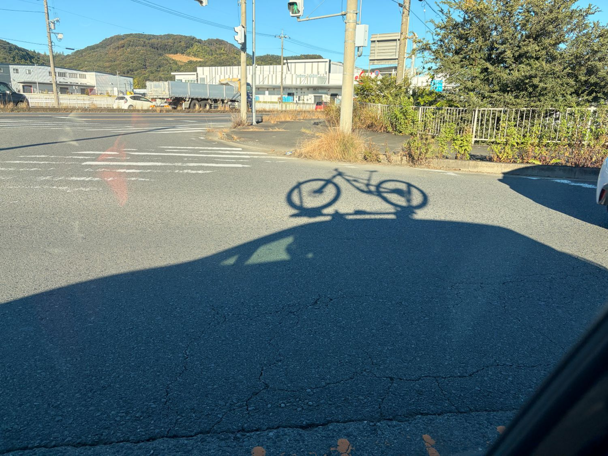
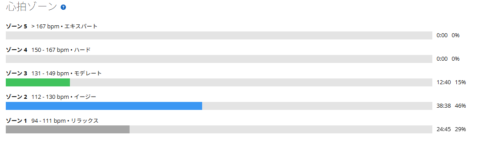

日の出が遅くなった朝、今日は友人とMTBでのんびり走る
11月に入り、朝がずいぶん暗くなってきた。MTBを車に積んで出かけたときの写真を見返すと、そのことを改めて感じる。時刻は朝5時53分。空は少しずつ明るくなっているけれど、まだ朝日が昇りきった感じではない。日の出も6時ごろになってきて、季節が進んだなあと思う。

今日はワットではなく会話がメイン
昨日はローラーでガッツリメニューだった。
そんな翌日、今日はMTB仲間と走る日。最初から高強度で踏むつもりはなかった。登りでは友人と話せるペースで進み、下りはMTBらしい走りを楽しむ。速さを競うのではなく、近況の話をしながら山の中で時間を過ごした。
ロードの練習では、どうしても「何ワットで何分」という数字が頭にある。MTBではそういうスイッチが自然と切れる。もちろん登りは登りなので楽ではないが、今日は追い込むための坂ではなかった。

約12km・獲得439m・心拍平均113bpm
- 全体11.86km / 1時間23分44秒（移動1時間16分32秒） / 獲得439m
- 心拍・回転平均113bpm / 最大143bpm / 平均72rpm
- Garmin有酸素トレーニング効果2.4（ベース／キープ）
- TSS40（推定。パワーメーターなし）

数字も今日の感覚に近かった。登りで少し心拍が上がることはあっても、全体としては低強度。
もっとも、MTBは下りで体を使う。心拍が低いから筋肉にまったく負荷がなかった、という話ではない。けれど、「アクティブレストからベース走くらい」という事前のつもりどおりに走れたと思う。
昨日あれだけ苦しんだのに
走り終わってから少し疲れて、なんだか眠くなった。そこで寝てみたら、起きた後はすっきり。重い疲労は特に感じていない。
昨日はローラーであれだけ苦しんでいたのに、今日は友人と話しながらのんびり登っている。同じ自転車なのに、やっていることはずいぶん違う。
富士ヒルゴールドを目指している以上、厳しい練習は必要だ。でも、こういう日があるから自転車を長く楽しめるのだと思う。友人と山へ行って、登りながら話して、下りで遊ぶ。これも私の自転車生活だ。
数字ばかり見ていると、朝の空を見落とす
今週はSST、太平山反時計回り、60分持続走、8分×4本と、かなり練習している。週末に、数字を稼がない日があってもいい。低強度のMTBの翌日、脚や腰がどう感じるか。練習の数字と自分の体感の両方を、これからも残しておきたい。
反省というほどのものはない。ただ、数字ばかり眺めていると、こんなにきれいな朝の空を見落としそうになる。日の出が遅くなったことに気づけたのも、早朝に自転車を積んで出かけたからこそ。今日はこれで十分いい一日だった。